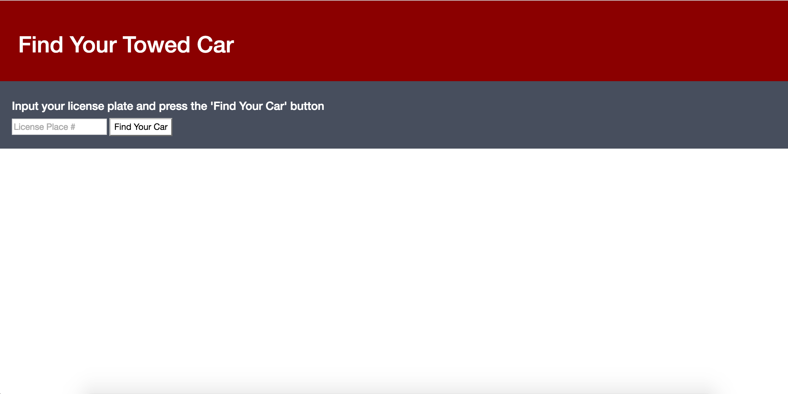
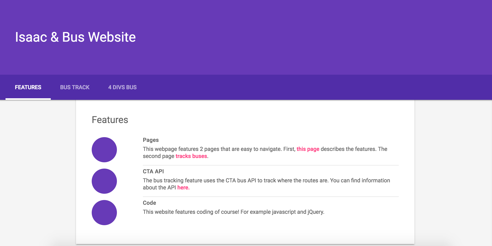
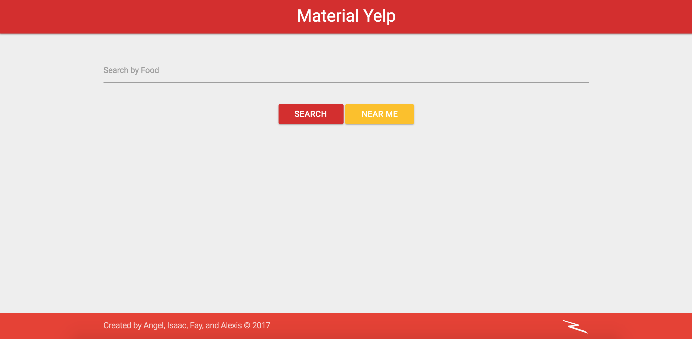

Featured Project
Towed Car Tracker
The site uses the City of Chicago API. You can find it here.

This API allows the user to search a license plate, and can see if it was towed, and where to find it.
Featured Project
CTA Bus Tracker
The site uses the CTA API. You can find it here.

This API allows the user to search for the different CTA bus's eta and other info for the western and addison routes.
Featured Project
Yelp API
The site uses the yelp API, made by Angel, Fay, Alexis, and me. You can find it here.

This API allows the user to search for resteraunts around chicago, or even search nearby using geolocation.